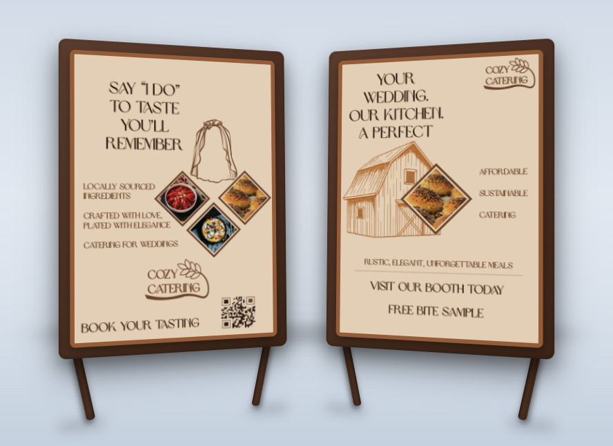

Marketing & Communications
Marketing & Communications Campaign (Cozy Catering)
This project focused on building an effective marketing and communications campaign by bringing together strategy, messaging, and visual design. As part of the final campaign, I created two printed pieces and two outdoor signage designs that worked together with a consistent purpose and style.

Overview
This project was the culmination of earlier research and planning work, resulting in a complete campaign for Cozy Catering that aimed to communicate the brand clearly and consistently.
My Role
I developed campaign visuals and created two printed pieces along with two outdoor signage applications to deliver the message across multiple touchpoints.
Problem
A campaign needs more than just attractive visuals. It must communicate the right message, stay visually consistent, and connect with the intended audience.
Process
- Built on earlier work related to the client problem and solution
- Focused on campaign consistency across different outcomes
- Considered both communication goals and visual identity
- Applied the campaign across print and outdoor formats
Solution
I created campaign materials that shared a common visual language and purpose, helping the final outcomes feel connected and professional.
Outcome
This project strengthened my understanding of how design works within communication strategy and how a campaign can stay cohesive across multiple formats.